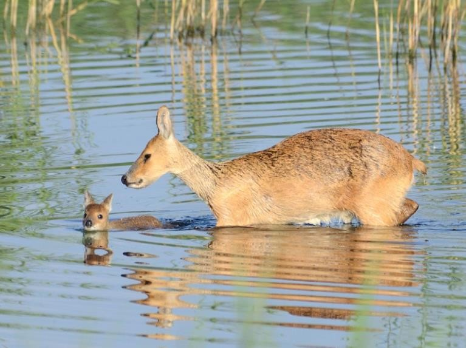
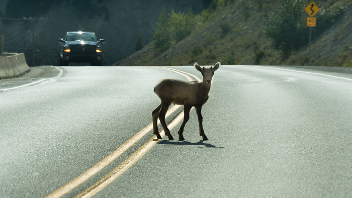

고라니

고라니의 생태환경
고라니는 주로 물가에 서식하기 떄문에 갈대숲 같은 곳에 보금자리나 임시 거처를 마련하는 경우가 많으며 물가에 서식하는 종답게 수영을 매우 잘한다

고라니는 한국이 아닌 전 세계적으로 보면 멸종위기 동물이다. IUCN 적색목록에서 고라니는 멸종위기인 '취약(Vulnerabl)'등급으로 분류되는데, 이는 사자, 하마, 치타, 판다, 향유고래와 같은 등급이다. 한국에서만 사냥 허가가 날 정도로 개체수가 드글드글하게 많은데, 전 세계적으로 고라니 개체 수 중 90%가 한국에 서식한다고 한다. 이 90%마저 북한에서는 개발로 서식지가 파괴되어 멸종위기 수준으로 개체수가 급감한 탓에 천연기념물로 지정되어 보호받는 형편이므로, 실질적으로 고라니의 대부분은 남한테 집중된 상황이다. 그리고 고라니는 IUCN 적색목록이면서도 정기적으로 수렵이 허가된 특이한 사례이다.
한국에 워낙 고라니가 많아서 사람과 접촉하며 피해가 많은 뿐이며 중국 연구결과에 따르면 본래 사람의 영향이 있는 곳에서는 서식하기가 힘들다고 한다. 경계심이 많은 동물일수록 사람과의 접촉에 스트레스를 많이 받는데 한국의 지리적 특성상 곳곳에 산지가 널려있다보니 고라니가 사람을 봤더라도 적당히 도망가거나 숨을 곳이 많아서 사람의 영향이 경감되는 것으로 보인다.
북한에선 산림이 대부분 파괴된 데다가 하천을 개조하고습지를 메워 농지로 만드는 등 개발하느라 고라니 서식지가 대부분 파괴되어 북한에서는 천연기념물 제916호로 지정되었고 북한에도 한 때 양강도 일대까지 고라니가 서식했지만 점차 개체수가 줄어 90년대 이미 황해남도 이북 15개 동물보호구로 국한되었고, 그 이후로도 개체수가 급감하여 일부 산간지역에 극소수 개체군으로 남았을 뿐이다. 북한 천연기념물 916호의 정식 명칭은 '구월산복작노루'로 북한 국토환경보호성에서는 사실상 멸종이라고 여긴다. 중국에서도 보호구역을 여러 곳 만들었지만 위험할 정도로 개체수가 감소했기에, IUCN은 한국에서도 사냥 허가를 중지해야 한다고 주장하는 편이다. 한국에 서식하는 고라니 개체수는 약 70만여 마리로, 사냥으로 죽는 개체는 1년에 대략 10만마리, 로드킬로 죽는 개체는 1년에 5~7만마리 정도이다.
한국에서 가장 많이 로드킬을 당하는 야생동물은 고라니이다. 고라니 2000마리가 차에 치일 때 멧돼지, 너구리, 오소리는 기껏해야 수십 마리 정도 치이는 식이라 다른 동물과 비교가 무의미하다. 고라니 로드킬을 피하기 위해 경적을 울려서 깜짝 놀래켜 피하게 하는 방법이 효과적인데, 고라니가 밤중에 등을 보고도 움직이지 않는 이유는 여러가지이유가 복합적으로 작용하는데, 일단 고라니는 기본적으로 자동차 전조등 불빛을 인식하지 못ㅎ나다. 광량이 너무 밝아 안구가 빛을 그대로 반사해 버리기 때문이다. 그리고 놀라면 일단 앞으로 튀어나가고 보는 초식동물 특유의 성질도 한 몫 한다.
특징 알아보기